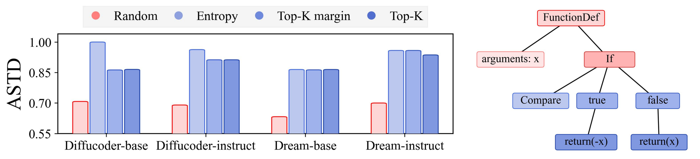

Confidence-based decoding is the dominant inference strategy for MDMs: at each step, it reveals the positions where the model is most confident. Although this policy is not explicitly left-to-right, we find that its final programs are structurally similar to programs generated by strict left-to-right decoding.
- We parse generated Python programs into abstract syntax trees (ASTs) and compare their global structure.
- Across DiffuCoder and Dream variants, confidence-based policies find programs much closer to the left-to-right reference set than random decoding does.
- The any-order interface therefore often collapses to a familiar causal generation strategy.

Confidence-based decoding yields code structurally close to left-to-right decoding.